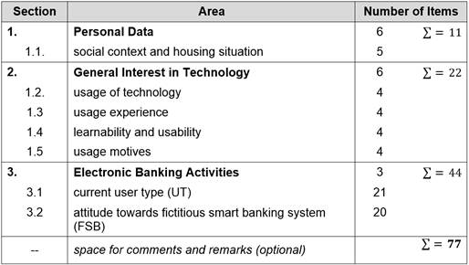
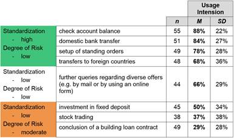

International Journal of Virtual Worlds and Human Computer Interaction (VWHCI)
ISSN: 2368-6103

Volume 2, Year 2014 - Pages 83-91
DOI: 10.11159/vwhci.2014.009
Smart Banking: User Characteristics and Their Effects on the Usage of Emerging Banking Applications
Carsten Röcker, Daniel Kaulen
Human-Computer Interaction Center, RWTH Aachen University, Aachen, 52056, Germany
roecker@comm.rwth-aachen.de; daniel.kaulen@rwth-aachen.de
Abstract - This paper analyzes the requirements of users of different generations with regard to future e-banking systems. An empirical study was conducted to verify six previously formulated hypotheses. The results show that the acceptance of such systems highly depends on factors such as age, gender and general technical affinity. It turned out that most of the older people are not yet willing to use such systems at all – independent of specific system characteristics. Additionally, it is more likely that men will use smart banking systems than women and that technical affinity has a positive influence on the general usage intention.
Keywords: Smart Banking, User Study, Technology Acceptance, Design Requirements.
© Copyright 2015 Authors This is an Open Access article published under the Creative Commons Attribution License terms. Unrestricted use, distribution, and reproduction in any medium are permitted, provided the original work is properly cited.
Date Received: 2013-09-12
Date Accepted: 2014-02-05
Date Published: 2014-04-09
1. Introduction
With the wide-spread diffusion of the Internet in the beginning of the 21st century, banks world-wide were forced to face new challenges with regard to electronic distribution channels. In this context, it is of particular importance to analyze the requirements of potential customers in an early phase of the design process of new systems [1]. Previous systems focused mainly on supporting financial transactions and were only recently extended to multi-functional online platforms that provide most functions, which have long been reserved to bank costumers [2].
Figure 1 illustrates the projected numbers of total Internet users and the projected numbers of people who actively used Internet banking in Germany during the period 2006 - 2012. It becomes obvious that there is a high correlation between the corresponding numbers of users. Compared to the usage of the Internet, Internet banking is still only used by a relatively small part of the population. While recent data from Germany [3] shows that 73.3% of the German population over 14 years are using the Internet, only about half of this group is also using Internet banking (2006: 41%, 2012: 50%). Due to the observable trend within the last three years (see Figure 1) and the high market saturation, one cannot expect that the number of Internet users continues to rise. According to the trend, the same seems to hold for the number of people who use Internet banking even though there are still lots of potential future users who already use the Internet but refrain from using Internet banking.

This paper aims at finding reasons for this gap in order to explain why only a comparably small proportion of the Internet users also uses Internet banking. To do so, the requirements of potential end users will be analyzed. While the perception and acceptance of existing online banking applications have been addressed in various studies in the past, there is currently very little knowledge with regard to the attitude of users towards smart banking applications, which are likely to emerge in the coming years.
2. Related Work
Existing work relevant in the context of this paper can be clustered into three main areas:
- Description and analysis of historic or existing applications [5-6],
- Empirical evaluations of user acceptance [2], [7-10],
- Studies addressing future and emerging technologies and services [11-16].
The papers classified into the first cluster examine the research field from the perspective of banks and show that competition is the driving factor for the introduction of banking applications in general. They attribute an important role to the Internet that allows banks to attract new customers in the long view. Liao and Cheung [5] already recognized in 2003 that security and privacy concerns are driving factors that affect the acceptance of Internet banking. This was confirmed by Wang et al. in the same year [10] and Caroline Möckel in 2011 [2].
Beside Aladwani [7] and French et al. [8], they belong to the group of researchers who performed an empirical evaluation of acceptance factors influencing the use of banking applications. In her study, Aladwani collaborated with eight banks and potential customers while French et al. analyzed with the aid of the card sorting method how acceptance is influenced by different types of website designs. Both results are consistent and worked out trust as the crucial acceptance factor. One of the largest empirical evaluations (n=1167) was carried out in Finland [9] in order to explore the effect of different factors affecting attitude formation towards Internet banking. It turned out that prior experience of computers and technology, as well as attitude towards computers influence the attitude towards Internet banking and thereby the actual usage behavior.
The majority of recent publications belongs to the third identified research cluster. The elaborations [11], [12], and [13] investigate the question how the future of banking may look like. They come to the conclusion that the branch bank network will scale down. Nevertheless, the results show that we are far away from a live without personal consultation as offered by bank consultants. Beck [11] sees the reasons for this in the asymmetric information distribution in the banking sector which implies that end users are dependent on the knowledge of bank consultants. Not without irony, Kühn indicates that this problem might be solved in the near future: "Thanks to the Internet, today's end users have access to exactly the same information as their bank consultants" [12]. Two techniques that make use of data mining in order to assist users in making "good" decisions during their banking activities were proposed by Aggelis et al. [14] and Ionita et al. [15]. Nami [16] took another approach and described how customers, banks and the whole economy can profit from electronic banking and summarizes problems that the designers of future banking system need to be aware of. Increased efficiency and cost reduction are the most advantageous aspects. On the other side, faulty systems or systems that lack of usability undoubtedly lead to a loss of trust and reputation of the bank. Therefore, it was observed that banks often hesitate to introduce complex, innovative banking systems.
3. Research Goal and Approach
In contrast to the three streams of research introduced in the related work section, this paper follows a more user-centered approach and aims at identifying the requirements of users with regard to the design of future e-banking systems as well as the usage barriers that might exist. The study explicitly aims at involving users well as non-users of existing e-banking systems in order to identify potential differences between these groups.
In existing literature (see, e.g., [9], [10], [17], [18], [19] or [20]) a variety of factors have been identified, which showed to have a significant influence on the acceptance and usage of new technologies. As we expect that most of this factors can be transferred to the acceptance of smart banking applications, our focus is especially on the following three factors.
3.1. Affinity towards Technology
Several studies (see, e.g., [22]) show that computer literacy and the user's general attitude towards technology are two important factors that significantly influence the intention to use new technologies. Existing research supports the assumption that the results of these studies can be generalized for most modern technologies. In case of smart banking applications, this would foster the hypothesis that users who successfully use existing technical devices are more likely to accept new electronic banking applications.
3.2. Age
Ziefle and Wilkowska [21] explored the acceptance of several systems offering medical assistance in home environments and found that different age groups have different reason for accepting and rejecting different types of technologies. Similar age-related acceptance patterns were also found for non-medical technologies (see, e.g., [23] or [24]). We expect to find comparable results and anticipate that the acceptance of smart banking applications is significantly affected by age.
3.3. Gender
Gender-specific differences are found in most technology acceptance studies [25][25] and should therefore be taken into account when exploring the usage intention of smart banking applications. For example, Venkatesh and Morris [27] studied the introduction of software systems in companies and found that the adoption decisions of men mostly depend on the usefulness of a system, while the decisions of women are strongly affected by the perceived usability. Similar behavioral patterns are likely to exist for smart banking applications.
4. Methodology
4.1. Hypotheses
The combination of existing knowledge about fundamental acceptance factors and our overall research goal led to the formulation of the following hypotheses:
4.1.1. Hypothesis H1
Younger people tend to show a higher general interest in technology in comparison to older generations. In addition, gender differences can be observed.
4.1.2. Hypothesis H2
Usage experience and usage intensity of existing technical systems tend to decrease with increasing age. In addition, gender differences can be observed.
4.1.3. Hypothesis H3
Younger people have less problems and more fun using existing technical systems and see a greater usefulness in these systems than older generations. In addition, gender differences can be observed.
4.1.4. Hypothesis H4 and H5
The willingness to use e-banking services decreases with increasing age and depends on the gender. The general affinity towards cashless payments follows the same trend.
4.1.5. Hypothesis H6
The willingness to use emerging smart banking systems decreases with increasing age. It is more likely that men will use such systems than women.
4.2. Participants
The majority of participants was recruited through the social networks of the authors. In total, N = 61 (53% women) between the age of 16 and 84 years participated in the study. The return rate of the questionnaires was around 86%. For further analysis, the participants were split into three age groups respectively generations [21][26]:
- Computer Generation (CG) - between 15 and 35 years,
- Household Revolution Generation (HRG) - between 36 and 55 years,
- Early Technical Generation (ETG) - older than 55 years.
The distribution of the age structure within each generation is shown in Figure 2.
The group of participants of the CG consists of N = 20 people aged between 16 and 35 years (M = 23, SD = 5.6), of which 35% are female. The HRG (N = 30) consists of persons aged between 36 and 55 years (M = 46, SD = 4.5). Around 60% of the participants of this group are female. The final group (ETG) comprises N = 11 participants aged 56 years or above (64% female). Compared to the other two groups, the standard deviation is considerable bigger (M = 72, SD = 9.0) as the age range spans a larger interval (see Figure 4).
4.3. Questionnaire
In order to reach participants in all three age groups, paper-based questionnaires were used. Even if web-based data acquisition tools would have probably led to a higher number of participants, we explicitly chose a pen-and-paper approach to also include older and less computer-literate persons. The questionnaire consisted of 77 items and was divided into three main areas: personal data, general interest in technology, and electronic banking activities (see Table 1). Filling out the final version of the questionnaire took about 15 to 20 minutes.

4.4. Research Variables
Two different types of variables were considered in the analysis. Variables that were directly captured in the questionnaire (e.g., age or gender) and index variables that were calculated by combing several individual variables (e.g., general interest in technology). In addition, the participants were further sub-divided into groups of similar interests or behaviors (e.g., with regard to their willingness to use e-banking systems).
5. Results
The results were analyzed using variance analysis (ANOVA) and t-tests. The significance level was set to 5%. The evaluation was guided by the six hypotheses illustrated above. Before results are explained in detail, Table 2 illustrates the sections from the questionnaire from which the particular dependent and independent variables were chosen. This will help to identify direct (e.g., age) and indirect factors (e.g., interest in technology) influencing acceptance.
5.1. Hypothesis H1
Younger people (CG) tend to show a higher general interest in technology in comparison to older generations (HRG, ETG). In addition, gender differences can be observed.
A first analysis was conducted to explore whether age and gender influence the general interest in technology (Figure 3). Considering the index value representing general interest in technology, a significant main effect of age (F(2, 54) = 5.50, p < .007) and gender (F(1, 54) = 12.26, p < .001) could be observed. For both factors, there is no interaction effect. Independent of the age group, women are less interested in technology than men and the interest in technology decreases with increasing age (true for both genders). Similar results were found in previous studies [21].
5.2. Hypothesis H2
Usage experience and usage intensity of existing technical systems tend to decrease with increasing age. In addition, gender differences can be observed.
In the next step we analyzed how far usage intensity and technical experience depend on age and gender (Figure 4). For the usage intensity, significant main effects for age (F(2, 55) = 24.53, p < .001) and gender (F(1, 55) = 7.42, p < .009) could be observed. The same applies for the usage experience. In both cases, there are no interaction effects for any of the two factors.
Post-hoc analyses for technical experience (by using Tukey's HSD test) revealed that the general technical experience within the ETG is lower than within the HRG (p < .001) and the CG (p < .001). However, the difference between the two younger generations is not significant (p < .191).
However, a comparative review of the results for general interest in technology, usage intensity and usage experience showed a different trend as the experience index for women within the youngest generation is slightly higher than for men.
5.3. Hypothesis H3
Younger people (CG) have less problems and more fun using existing technical systems and see a greater usefulness in these systems than older generations (HRG, ETG). In addition, gender differences can be observed.
In order to explore whether a general affinity for technology depends on socio-demographic factors, two additional index values were analyzed: those that represent learnability and usability respectively fun and utility (Figure 5).
Regarding the index value for learnability and usability, a significant main effect for age (F(2, 51) = 10.57, p < .001) could be observed, while gender did not affect this value significantly. Likewise, the index value for fun and utility showed only a significant main effect for age (F(2, 51) = 9.75, p < .001). A Post-hoc analysis by using Tukey's HSD test showed that the deviations between the ETG and HRG (p < .513) and the ETG and CG (p < .137) are not significant, while the difference between the CG and HRG is highly significant (p < .001). Similar to previous results, no interaction effects were found.
5.4. Hypothesis H4 and H5
The willingness to use e-banking services decreases with increasing age and depends on the gender. The general affinity towards cashless payments follows the same trend.
Neither the average willingness to use of different e-banking services [age: (F(2, 46) = 1.31, p < .279), gender: (F(1, 46) = 0.134, p < .716)], nor the willingness to use for cashless payments [age: (F(2, 53) = 0.472, p < .626), gender: (F(1, 53) = 0.684, p < .412)], showed a significant main effect for age or gender.
The affinity towards cashless payments (Figure 6) is very high for all age groups likewise. In contrast, the willingness to use e-banking systems is comparably lower. Table 3 provides an overview of the willingness to use different e-banking services (0% = I do not like to use this service at all, 100% = I am very keen on using this service).

In general, e-banking services could be classified according to two criteria: standardization and degree of risk. In this context, services with a low risk and high standardization tend show the highest usage intentions, while the intention to use services tends to decreases with a decreasing degree of standardization and an increasing degree of risk. The findings summarized in Table 3 foster this assumption. Hence, the observed intention to use highly standardized services with low risk is considerably higher than 50%, while less standardized services with a moderate degree of risk only show usage intentions below 50%. Comparably high values with regard to the standard deviation can be found (among others) for stock trading and the investment in fixed deposit. This shows that the preferences of users in these areas are not very homogenous.
5.5. Hypothesis H6
The willingness to use emerging smart banking systems decreases with increasing age. It is more likely that men will use such systems than women.
Previously, we analyzed the extent to which the usage of current e-banking systems is influenced by the factors age and gender. This section aims at analyzing how these factors influence the usage intention of emerging smart banking applications (Figure 7).

\Significant main effects could be observed for age (F(2, 55) = 6.83, p < .002) and gender (F(1, 55) = 5.75, p < .020), while no interaction effect is present. Hence, these results validate our previous hypothesis. Similar to the general interest in technology, technical experience and the usage of technology, the women belonging to the oldest generation (ETG) show the least willingness to use emerging banking technologies.
6. Discussion
First of all, it is important to note that it turned out to be very difficult to collect opinions from people belonging to the oldest generation (ETG) as their general interest in technology is rather low. Some participants even refused to fill out the questionnaire, when they found out that it was about e-banking services (which they do not use at all). Many others completed the questionnaire but skipped several parts – especially those querying their attitude towards emerging smart banking systems. This suggests that many seniors are not willing to deal with such systems (independent of specific system characteristics). This is highlighted by the following comment of a woman belonging to the ETG: "As I do not own any electronic devices and have no internet connection at all, these questions (remark of the authors: regarding e-banking) are not relevant to me." According to the results of [1] that substantiate the assumption that young adults are the target group for emerging e-banking systems, this kind of reaction is not very surprising. Nevertheless, it has to be taken into account when interpreting the present results. Especially the fact that no significant differences between the younger and older generations were revealed during the analysis of hypotheses H4 (willingness to use of e-banking services) and H5 (general affinity towards cashless payments) can be explained by the fact that mainly technology-prone participants were considered in the group of elderly users (ETG). Even though the ETG is not the primary target group, it is essential to also consider their needs when designing smart banking systems.
Our study mainly focused on how socio-demographic factors such as age and gender influence the attitude towards smart banking applications and the actual usage behavior. The results show that these factors that influence attitude and usage behavior of technology in general (see, e.g., [21], [22], [23], [24], [25], [27]) also apply to smart banking. Related work revealed that this is not true for all factors. Especially security and privacy concerns [28][29][30][31] play a significantly higher role in the area of smart banking than in technology in general (see, e.g., [5], [10], [11]). These findings have not been verified in the scope of this study. Since they date back to 2001-2003, it needs to be checked in future work whether these results still apply today because technology and the attitude towards technology changed rapidly within the last decade.
To sum up, one can advise banks to mainly focus on applications with a high standardization and a low degree of risk (see Table 3) since most users already accept these types of services. It is of special importance to inspire confidence. Considering our results and keeping the aging society (see, e.g., [32], [33], [34] or [35]) in mind, the answer to the initially motivated research question ("Why does only a small proportion of the Internet users also use Internet banking?") can be answered. Due to the lack of technical experience (compare Figure 4) and perceived learnability and usability issues (compare Figure 5), people from the ETG still refrain from using smart banking systems.
References
[1] U.C. Eze, J.K. Manyeki, L.H. Yaw, and L.C. Har, "Conceptualizing the Key Factors Influencing Internet Banking Adoption Among Young Adults," in Proceedings of the International Conference on Business, Engineering and Industrial Applications (ICBEIA), Malaysia, 2011, pp. 99-104. View Article
[2] C. Moeckel, "Human-Computer Interaction for Security Research: The Case of EU E-Banking Systems," in Proceedings of the 13th IFIP TC 13 International Conference on Human-Computer Interaction - Volume Part IV, Lissabon, 2011, pp. 406-409. View Article
[3] B. van Eimeren and B. Frees "Ergebnisse der ARD/ZDF-Onlinestudie 2011: Drei von vier Deutschen im Netz – ein Ende des digitalen Grabens in Sicht?" in Media Perspektiven, No. 7-8, 2011, pp. 334-349 [in German]. View Article
[4] Statistisches Bundesamt, GENESIS Online Database, [Online] Last Accessed: 30 Jan 2014 View Website
[5] Z. Liao and M.T. Cheung, "Challenges to Internet E-Banking," in Communications of the ACM, Vol. 46, New York, 2003, pp. 248-250. View Article
[6] Deutsche Bundesbank, "Monatsbericht Dezember 2000," Deutsche Bundesbank, Frankfurt, 2000. View Article
[7] A. M. Aladwani, "Online Banking: A Field Study of Drivers, Development Challenges, and Expectations", in International Journal of Information Management, Kuwait, 2001, pp. 213-225. View Article
[8] T. French, K. Liu, and M. Springett, "A Card-Sorting Probe of E-Banking Trust Perceptions," in Proceedings of the 21st British HCI Group Annual Conference on People and Computers, Vol. 1, Swinton, 2007, pp. 45-53. View Article
[9] H. Karjaluoto, M. Mattila, and T. Pento, "Factors Underlying Attitude Formation Towards Online Banking in Finland", in International Journal of Bank Marketing, Vol. 20, No. 6, 2002, pp. 261-272. View Article
[10] Y-S. Wang, Y-M. Wang, H-H. Lin, T-I. Tang, "Determinants of User Acceptance of Internet Banking: An Empirical Study", in International Journal of Service Industry Management, Vol. 14, No. 5, 2003, pp. 501-519. View Article
[11] H. Beck, "Banking is Essential, Banks are Not. The Future of Financial Intermediation in the Age of the Internet," in Netnomics, Hingham, 2001, pp. 7-22. View Article
[12] S. Kühn, "Leben ohne Bankberater: Gut informiert - sicher im Online-Banking - finanziell selbstbestimmt". Wien, Österreich: Linde, 2009 [in German].
[13] M. Bhattacharyya and V. Giannikas, "Behold a Pail of Milk: The Future of Banking, Currency, and E-Commerce," in XRDS, New York, 2011, p. 5. View Article
[14] V. Aggelis and P. Anagnostou, "E-Banking Prediction Using Data Mining Methods," in Proceedings of the 4th WSEAS International Conference on Artificial Intelligence and Knowledge Engineering Data Bases, Wisconsin, 2005, p. 37. View Article
[15] I. Ionita and L. Ionita, "A Decision Support Based on Data Mining in E-Banking," in Proceedings of the RoEduNet International Conference (RoEduNet), 2011, pp. 1-5. View Article
[16] M.R. Nami, "E-Banking: Issues and Challenges," in ACIS International Conference on Software Engineering, Artificial Intelligence, Networking and Parallel/Distributed Computing, Los Alamitos, 2009, pp. 263-266. View Article
[17] C. Röcker, "Information Privacy in Smart Office Environments: A Cross-Cultural Study Analyzing the Willingness of Users to Share Context Information," in Proceedings of the International Conference on Computational Science and Its Applications, Vol. IV, Berlin, Heidelberg, 2010, pp. 93-106. View Article
[18] M. Ziefle, C. Röcker, and A. Holzinger, "Medical Technology in Smart Homes: Exploring the User's Perspective on Privacy, Intimacy and Trust", in Proceedings of the 3rd IEEE International Workshop on Security Aspects of Process and Services Engineering (SAPSE'11), Munich, Germany, 2011, pp. 410-415. View Article
[19] C. Röcker, M. Janse, N. Portolan, and N. Streitz, "User Requirements for Intelligent Home Environments: A Scenario-Driven Approach and Empirical Cross-Cultural Study", in Proceedings of the International Conference on Smart Objects & Ambient Intelligence (sOc-EUSAI'05), Grenoble, France, 2005, Vol. 121, pp. 111-116. View Article
[20] M. Ziefle and C. Röcker, "Acceptance of Pervasive Healthcare Systems: A comparison of different implementation concepts", Full paper at the Workshop User-Centered-Design of Pervasive Health Applications (UCD-PH'10). 4th ICST Conference on Pervasive Computing Technologies for Healthcare, 2010, pp.1-6. View Article
[21] M. Ziefle and W. Wilkowska, "Technology Acceptability for Medical Assistance," in Proceedings of the 4th ICST Conference on Pervasive Computing Technologies for Healthcare, 2010, pp. 1-9. View Article
[22] K. Alshare, E. Grandon, and D. Miller, "Antecedents of Computer Technology Usage: Considerations of the Technology Acceptance Model in the Academic Environment," in Journal of Computing Sciences in Colleges, Vol. 19, No. 4, Emporia, 2004, pp. 164-180. View Article
[23] F. Heidrich, M. Ziefle, C. Röcker, and J. Borchers, "Interacting with Smart Walls: A Multi-Dimensional Analysis of Input Technologies for Augmented Environments", in Proceedings of the ACM Augmented Human Conference (AH'11), 2010. View Article
[24] F. Heidrich, K. Kasugai, C. Röcker, P. Russell, and M. Ziefle, "roomXT: Advanced Video Communication for Joint Dining over a Distance", in Proceedings of the 6th International Conference on Pervasive Computing Technologies for Healthcare (PervasiveHealth), 2012, pp. 211-214. View Article
[25] C. Röcker, "Design Requirements for Future and Emerging Business Technologies: An Empirical Cross-Cultural Study Analyzing the Requirements for Ambient Intelligence Applications in Work Environments", Driesen, Taunusstein, Germany, 2009. View Article
[26] R. Sackmann and A. Weymann, "Die Technisierung des Alltags - Generationen und technische Innovationen". Campus, Frankfurt, Germany, 1994 [in German]. View Article
[27] V. Venkatesh and M.G. Morris, "Why Don't Men Ever Stop to Ask for Directions?", MIS Quarterly, Vol. 24, No. 1, 2000, pp. 115-139. View Article
[28] C. Röcker, S. Hinske, and C. Magerkurth, "Intelligent Privacy Support for Large Public Displays", in C. Stephanidis (Ed.): Universal Access in HCI, Part II, LNCS 4555. Proceedings of the 12th International Conference on Human-Computer Interaction (HCII'07), Springer, Heidelberg, Germany, 2007, pp. 198-207. View Article
[29] S. Lahlou, M. Langheinrich, and C. Röcker, "Privacy and Trust Issues with Invisible Computers", in Communications of the ACM, Vol. 48, No. 3, 2005 pp. 59-60. View Article
[30] C. Röcker and A. Feith, "Revisiting Privacy in Smart Spaces: Social and Architectural Aspects of Privacy in Technology-Enhanced Environments", in Proceedings of the International Symposium on Computing, Communication and Control (ISCCC'09), pp. 201-205. View Article
[31] C. Röcker and C. Magerkurth, "Privacy and Interruptions in Team Awareness Systems", in C. Stephanidis (Ed.): Universal Access in HCI, Part I, LNCS 4554, Proceedings of the 12th International Conference on Human-Computer Interaction (HCII'07). Springer, Heidelberg, Germany, 2007, pp. 273-283. View Article
[32] M. Ziefle, C. Röcker, K. Kasugai, L. Klack, E-M. Jakobs, T. Schmitz-Rode, P. Russell, and J. Borchers, "eHealth – Enhancing Mobility with Aging" in M. Tscheligi, B. de Ruyter, J. Soldatos, A. Meschtscherjakov, C. Buiza, W. Reitberger, N. Streitz, T. Mirlacher (Eds.): Roots for the Future of Ambient Intelligence, 2009, pp. 25-28. View Article
[33] C. Röcker, M. Ziefle, and A. Holzinger, "From Computer Innovation to Human Integration: Current Trends and Challenges for Pervasive Health Technologies" in A. Holzinger, M. Ziefle, C. Röcker (Eds.): Pervasive Health - State-of-the-Art and Beyond. Springer, London, UK, 2014. View Article
[34] C. Röcker, "User-Centered Design of Intelligent Environments: Requirements for Designing Successful Ambient Assisted Living Systems", in Proceedings of the Central European Conference of Information and Intelligent Systems (CECIIS'13), 2013, pp. 4-11. View Article
[35] A. Holzinger, M. Ziefle, and C. Röcker, "Human-Computer Interaction and Usability Engineering for Elderly (HCI4AGING): Introduction to the Special Thematic Session" in K. Miesenberger, J. Klaus, W. Zagler, A. Karshmer (Eds.): Computers Helping People with Special Needs, Part II, LNCS 6180. Springer, Heidelberg, Germany, 2010, pp. 556-559. View Article